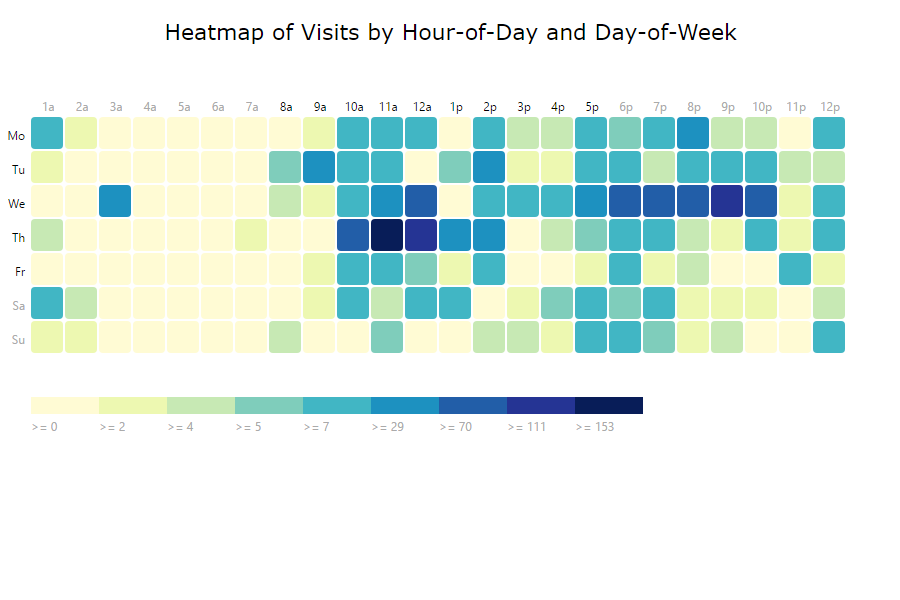
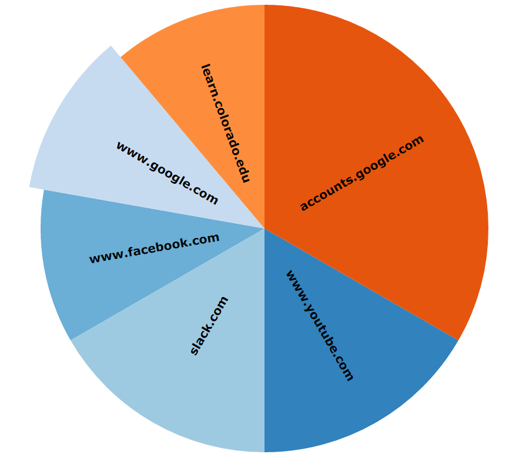
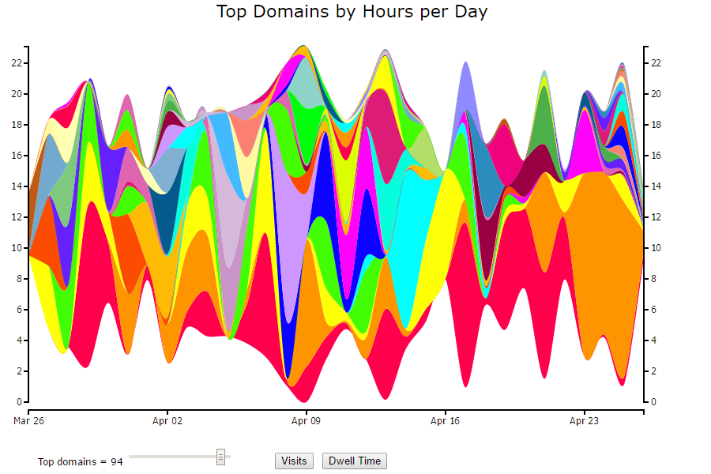
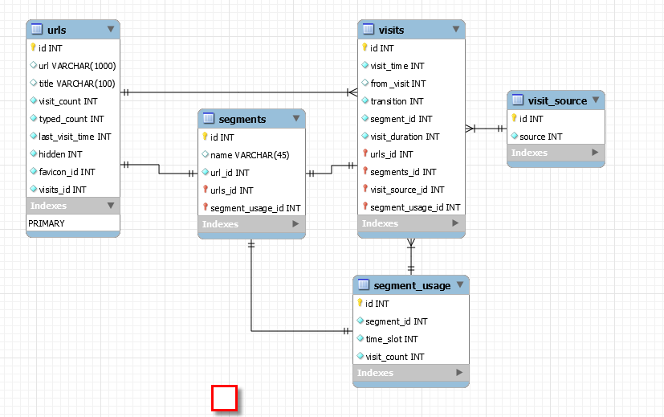
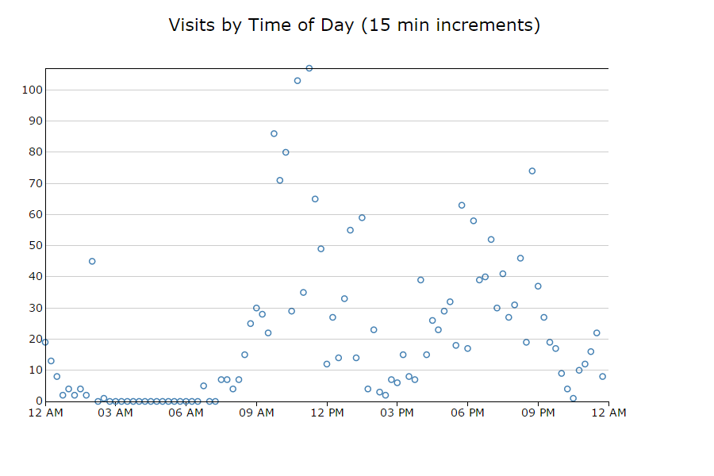

Displays dwell time on websites over a 24-hour period. Uses typical D3 strategies, data
comes from streamgraphData.js. Credit to bill bunkat's timeline d3.js code available on bl.ocks for
structural inspiration.
- Source:
Uses a chrome history API to retrieve data
Data is gathered by streamgraphData.js at extension load, and
then incrementally when this page loads/
Displays visits for all entire STREAMGRAPH_NUMDAYS as if they occured in a single day
If set to 0, then data for entire chrome history file will be displayed.
Data for TOPVISITS_MAX_DOMAINS is pulled into D3 chart
Overall strategy
1. Send message to the listener on background page to send query data
2. Display the Visits by hour of day and day of week visualization using D3
Graph visual:

See tod for data format - use tod.heatmap data element
Uses a chrome history API to retrieve data
Data is gathered by listen.js at extension load. The sites are then organized into ten slices
where the 10th category is defined as an "other" section.
Overall strategy
1. Send message to the listener on background page to send query data
2. Display the piechart visualization using D3 based on the data parsed
3. Only displays ten slices so the it does not become overcrowded
Graph visual:

Uses a chrome history API to retrieve data
Data is gathered by streamgraphData.js at extension load, and
then incrementally when this page loads/
Displays either 'visits' or 'dwelltime' (time initial visit time to url and start of next url visit)
Data is displayed based on STREAMGRAPH_NUMDAYS up to entirety of chrome history
Data for STREAMGRAPH_MAX_DOMAINS is pulled into D3 chart. User can use slider to change this.
Dwelltime data is 'capped' at MAX_DWELL_HOURS hours
Overall strategy
1. Send message to the listener on background page to send query data
2. Display the streamgraph visualization using D3
3. If slider is moved, then zero out data for last n datasets and show selected number of domains
4. If 'visit' or 'dwell' button is pressed, then do a data refresh
5. Vertical bar can isolate a specific 'domain stream' and show via tooltip the data for that domain
Graph visual:

See streamgraphDwell and streamgraphVisits for data format
Uses a chrome history API to retrieve data
Uses alaSQL (in-memory SQL DB) to process the data for D3 usage
Overall strategy
1. Setup listener for D3 visualizations
2. Call chrome.history and chrome.visits with callback functions
3. Augment any data items, 'join' history and visit data and push to data array
4. Process the final data set (sort, calculate dwell times, diagnostics
5. Build alaSQL query results for D3 operations
See streamgraphD3.js visualization
Entity diagram from Chrome History API (by examing schema in History file with sqlite3)

Core API history strategy was based on mechanism used here:
Uses a chrome history API to retrieve data
Data is gathered by streamgraphData.js at extension load, and
then incrementally when this page loads/
Displays visits for all entire STREAMGRAPH_NUMDAYS as if they occured in a single day
If set to 0, then data for entire chrome history file will be displayed.
Data for TOPVISITS_MAX_DOMAINS is pulled into D3 chart.
Data is collected in {@link TOD_TIMEINTERVAL) buckets (e.g. 15 = 15 minutes)
Overall strategy
1. Send message to the listener on background page to send query data
2. Display the Visits by Time of Day visualization using D3
3. Hovering over a bar will diplay exact number of visits in a tooltip box
Graph visual:

See tod for data format - use tod.timeofday data element
Uses a chrome history API to retrieve data
Data is gathered by streamgraphData.js at extension load, and
then incrementally when this page loads/
Displays visits for all entire STREAMGRAPH_NUMDAYS
If set to 0, then data for entire chrome history file will be displayed.
Data for TOPVISITS_MAX_DOMAINS is pulled into D3 chart.
Overall strategy
1. Send message to the listener on background page to send query data
2. Display the cumulative visits to the top domains (as measure by cumulative visits)
Graph visual:

See topVisits for data format
Uses a chrome history API to retrieve data
Data is gathered by streamgraphData.js at extension load, and
then incrementally when this page loads/
Data is based on vists during the last STREAMGRAPH_NUMDAYS days
If set to 0, then data for entire chrome history file will be displayed.
Data for WORDCLOUD_MAX_DOMAINS is pulled into D3 chart.
Overall strategy
1. Send message to the listener on background page to send query data
2. Display a wordcloud based on the top domains visited during the selected period
3. Scale the fontsize based on word frequency
Graph visual:

See wordCloud for data format